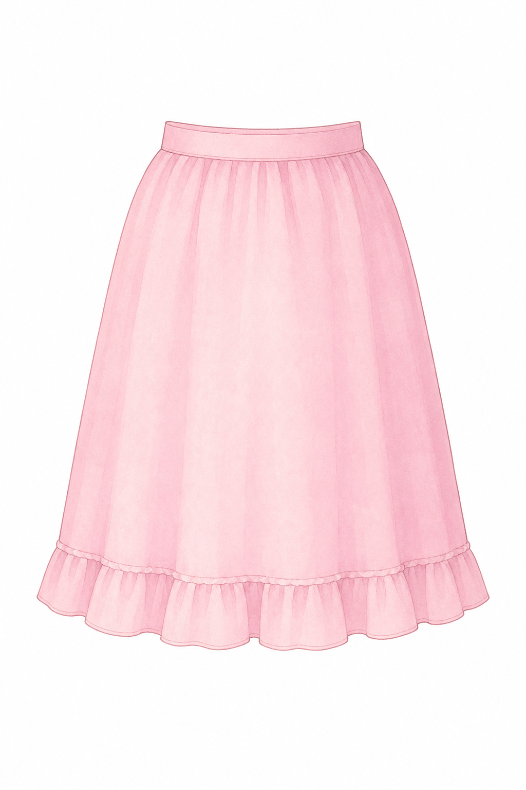
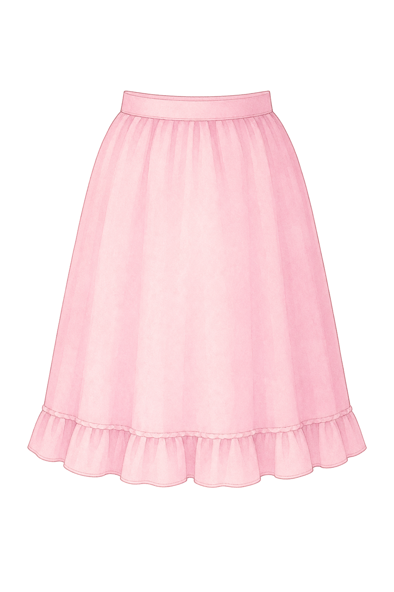
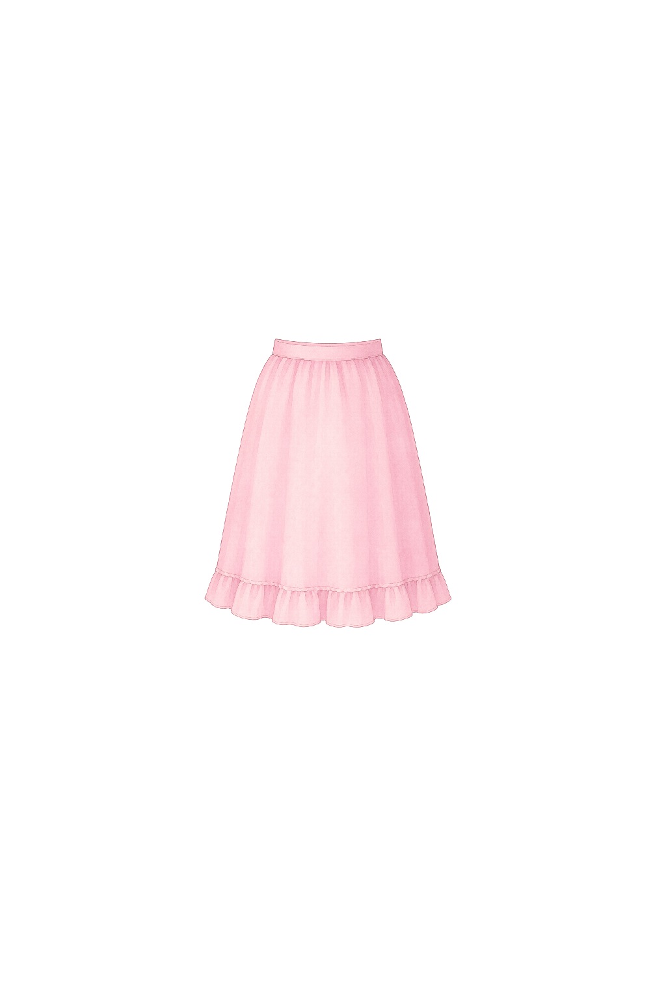
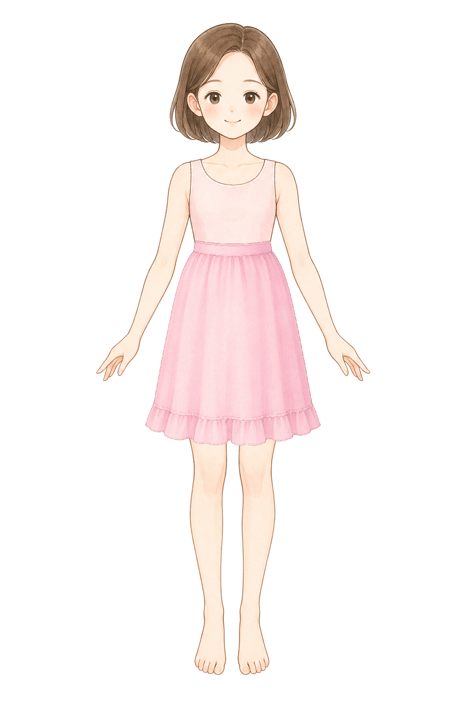
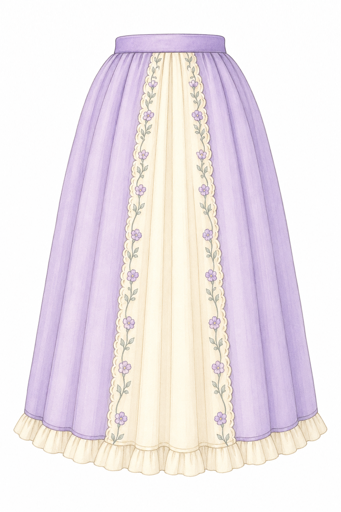
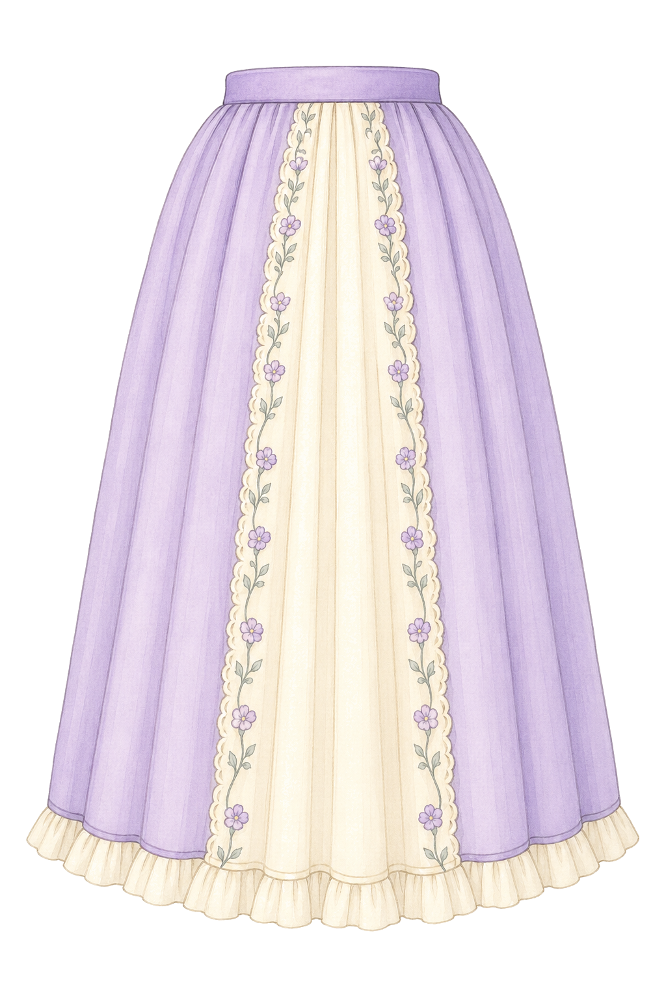
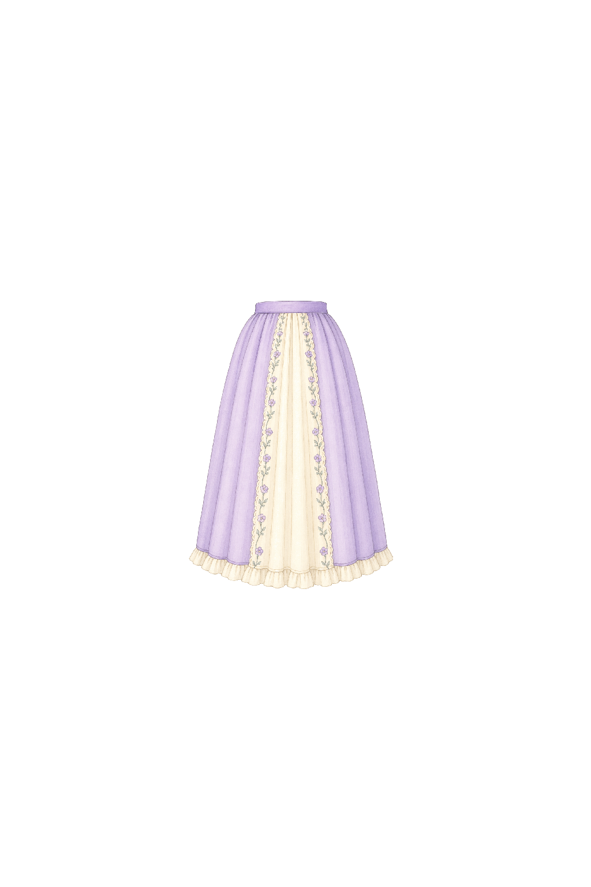
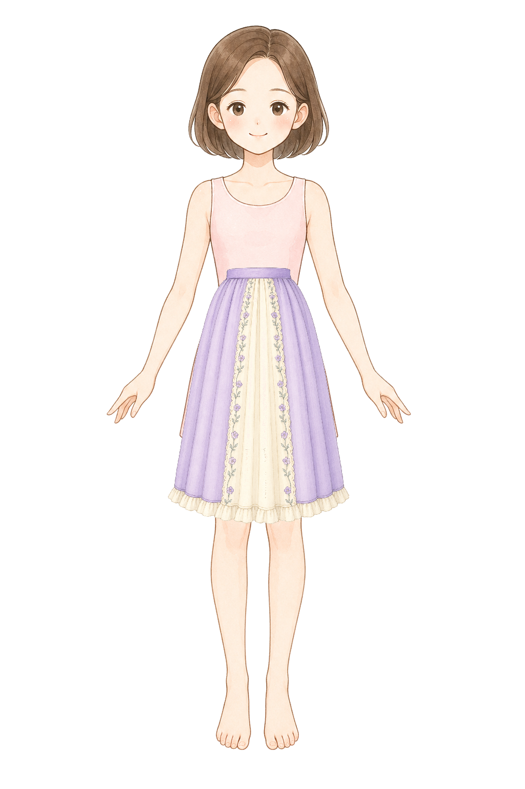

Base: style-d-encyclopedia-clean-base. Body center X: 504. Target rects: {"bottomLong":{"x":314,"y":520,"width":380,"height":500}}.
bottomLong
Bottom: knee-length A-line skirt fit
ok
BaseRaw

Cutout

Normalized

Composite

single skirt layer for a children princess dress-up game, original pastel storybook encyclopedia illustration matching a soft Japanese picture-book fashion encyclopedia, soft watercolor-like coloring, clean fine linework, front view skirt only, no torso, no body, no legs, no feet, no mannequin, no shadow, pure white 1024 by 1536 canvas, a modest pastel pink A-line skirt from waist to knee length, opaque fabric, not sheer, no transparent tulle, simple waistband, small child-friendly frill near the hem, vertical silhouette, taller than wide, centered and symmetrical, designed to overlay a front-facing paper doll waist and cover the base dress hem completely, no blouse, no shoes, no text, no watermark
bottomLong
Bottom: long frill skirt fit
ok
BaseRaw

Cutout

Normalized

Composite

single long skirt layer for a children princess dress-up game, original pastel storybook encyclopedia illustration matching a soft Japanese picture-book fashion encyclopedia, soft watercolor-like coloring, clean fine linework, front view skirt only, no torso, no body, no legs, no feet, no mannequin, no shadow, pure white 1024 by 1536 canvas, a modest lavender and cream skirt from waist to just below the knees, opaque fabric, not sheer, no transparent tulle, no see-through lace, simple waistband, gentle vertical folds, small frill hem, vertical silhouette, taller than wide, not a short tutu, centered and symmetrical, designed to overlay a front-facing paper doll waist and cover the base dress hem completely, no blouse, no shoes, no text, no watermark